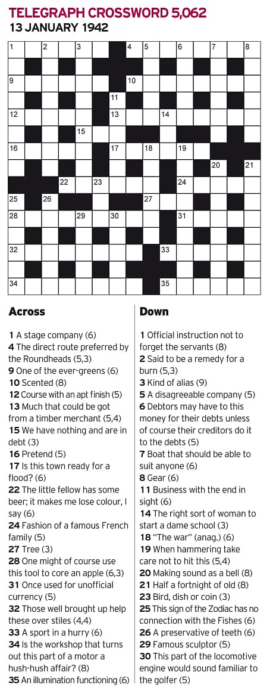

(Mason)
Recruitment at Bletchley Park
Women were recruited to Bletchley though universities, military services, crossword competitions, and civilian offices. Joan Clarke, a key gear in decrypting Enigma, was recruited through her university advisor while most machine and wireless operators came from the military, suggesting that this method of drawing in whoever had the skills to decrypt was necessary for BP's operation to succeed.
"In 1942 the Daily Telegraph hosted a competition for GC&CS where entrants were challenged to complete a crossword in under 12 minutes. Those successful were later contacted to see Colonel Nicholls of the General Staff on a confidential matter of national importance. "
- Gillian Mason, curator of "The Women of Bletchley Park: 1938-1945"
"...the work did not really need mathematics, but mathematicians tended to be good at it." "My ambition was to join the WRNS so I went to Plymouth to enroll. The centre of the town was in ruins after the German raid, but, incredibly, the main department store was serving canteen lunches in a makeshift hut on their bombed site. I went on to Devonport and was interviewed by a WRNS officer. It seemed that I had been accepted for boats' crew category in view of my sailing experience but suddenly she asked me if I could keep a secret. I answered that I really didn’t know as I had never tried. In spite of this unsatisfactory answer, she said that I would be considered for Special Duties 'X' as a second choice...we enquired from the engine driver where he was going. He replied with a broad grin and informed us that the Wrens get out at Bletchley." |

(Chivers)
|
"An interview with Frank Birch, Fellow of King's College, Cambridge, sent me to the GC&CS in Bletchley Park." "I was recruited for GC&CS by Gordon Welchman, who had supervised me in geometry for Part II of the Cambridge Tripos. ...Without breaching security he must have said enough to attract me" “In the Autumn of 1943, the Government called up all girls aged 17½ ... to work in munitions or hospitals, the Women’s Services being at that time closed for recruitment. It was with some trepidation that I went for my interview at the Labour Exchange ... fortunately I had a Credit in Maths on my School Certificate, and the official thought I should go for an interview at the Foreign Office. Within a month I was on my way to Bletchley Park. My first impression was a lecture on the utmost secrecy the work entailed, and a signing of the Official Secrets Act." |
Multilingual Recruits
Skills in German and Japanese were highly valued at BP as the decrypted messages had to be translated from technical German jargon to cryptic English that couldn’t be understood by the Axis.
"Graduates with degrees in modern languages or students thereof (e.g. Carmen Blacker, Irene Watkins, Jean Davies and Joyce Robinson) or Y Station Wrens, for whom German was a requirement, attained through university or time spent in Germany (e.g. Vivienne Jabez-Smith and Gabrielle Hale), were employed." "The overwhelming majority of university-educated women had languages as their subject, eleven of the fifteen who specify their subject." 
(Dillwyn)
|
"How did you come to be selected for Bletchley Park? Where did that come from?" "It was he who informed me the Foreign Office that I was a promising student of Japanese, and who arranged for me to be interviewed wih the prospect of 'an important job'." "Those sent to Bletchley Park worked in interpretation and indexing of captured documents, which required a very high standard of German, high enough that an Honours degree in modern languages was not considered a sufficient qualification." |
Operating the Bombe
"Bombe machines were not simple machines to operate, and the work was heavy, requiring the operators to be “of good height and eyesight”."
- Annie Burman
The Bombe decrypted the Enigma. Working day and night, this massive machine eliminated possible rotor settings used to encrypt messages. The women who operated the Bombe were required to have a deep understanding of its design.
"You had to plait up this machine at the back with these great big leads which had to be plugged into different bits. Then at the front, you had this rack with rows and rows of drums marked up by colour and you were told what combination of colours you were to put on. You would set them all, press a button and the whole row went round once and then moved the next one on. It took about fifteen minutes for the whole run, stopping at different times, and you recorded the stop and phone it through and, with any luck, sometimes it was the right one and the code was broken. It was very smelly with machine oil and really quite noisey. The machine kept clanking around and unless you were very lucky your eight-hour watch would not necessarily produce a good stop that broke a code. Sometimes you might have a good day and two of the jobs you were working on would break a code and that was a great feeling, particularly if it was a naval code." |

(PA)
|
|
(ComputingHeritage)
|
"Of the twenty-seven women who were machine operators, twenty-five were members of the WRNS. Seventeen of these were bombe operators, one operated Hollerith machines, one operated Robinson machines, three only Colossus and two both Robinsons and Colossi. The two Foreign Office civilians were both Hollerith operators, and had worked punch-card machines before...The only Wren who operate a Hollerith machine, M. Perry, also did clerical work after being transferred from Outstation Eastcote to Hut 7." |
Working the Wireless

(Mason)
|
"...the girls used to call me a morse fanatic." "...we were a lifeline to the outside world." "[the work was] nerve racking." "Communications entailed operating teleprinters and wireless sets, and morse-slip reading, where morse symbols were transmitted by machine rather than by hand." |
Wireless Operators listened for hours to different frequencies, discerning transmission snippets. While monotonous, it required intense concentration. Although these women were not regarded highly by some at BP, their work was key in intercepting intelligence.
“We listened – we spent our four hours on watch, twiddling the knobs on our receiver up and down the frequencies that the German ships and bases used and apart from any plain language we might pick up. What we were mostly listening to were coded messages and they used three, four or five letter codes and we had message pads which were blocked out in squares in which we would write down the three or four letters as we heard them. Very often they were interrupted, fading or distorted so you really had to listen very very closely.
When a German ship came up on one of the frequencies, usually a carrier wave came up first. You would latch on to this and see if it turned into speech and the speech would normally start with the call signs of the sender and of one or two other ships or places or whoever he was sending to. The German signal man would then start reading out these letters, they had names for all the letters of the alphabet like Anton, Berta, Caesar, Dora, Emil, Fritz, Gustav, Hans, and so on.”
- Pat Davies, WRNS Y-Service
|
Student-composed words are in bold, white font. The header image is a sketch of women working at BP. Consider their importance and how they were masked behind their successes while viewing this website.
|
Madeleine Goertz & Josh Wentzien
Junior Division Group Website Student Words on Website: 1195 Student Words in Process Paper: 498 Minutes of Multimedia: 3:55 |

|